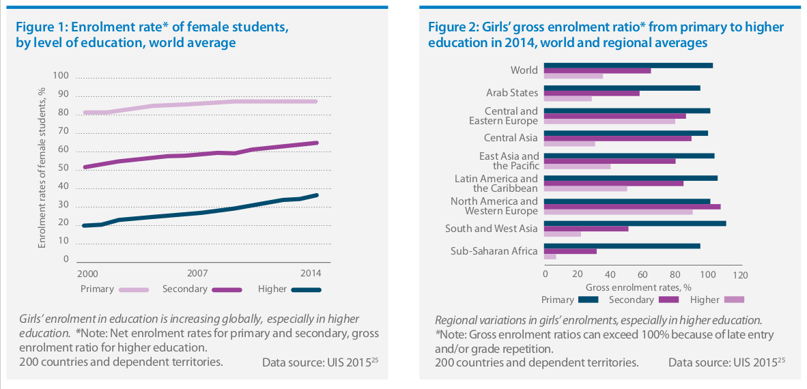

Girls’ and women’s participation in STEM education needs to be considered in the context of their overall access to, and participation in, education. While access to education for girls and young women has globally improved, important disparities persist both among and within regions and countries. Significant progress has been made with respect to girls’ participation in education in recent decades. Trends show a small but consistent increase in female students’ enrolment rates at all levels of education since 2000 (Figure 1). Globally, in 2014, gender parity was achieved in primary, lower secondary and upper secondary education. Significant progress has been made in higher education, where the enrolment of female students almost doubled between 2000 and 2014, with young women constituting the majority of students at Bachelor’s and Master’s degree levels globally. However, the percentage of female students who continue with doctoral degrees drops by more than 7% compared to those enrolled at Master’s level. 25 Despite the positive global trends, there are significant disparities across regions and countries, and among specific groups within countries. The global achievement of gender parity in access to primary education, for example, masks important disparities in many regions and countries. 26 In secondary education, gender disparities are more diverse, with considerable regional differences. For example, more boys than girls complete lower and upper secondary education in South and West Asia, sub-Saharan Africa and the Arab States (Figure 2), while the opposite is true in Latin America and the Caribbean.Despite gains in access, socio-economic, cultural and other obstacles still prevent female learners from completing or benefiting fully from good quality education of their choice in many settings. These barriers increase in adolescence, when gender roles for girls become more entrenched and gender discrimination more pronounced. Barriers include household and care responsibilities, early marriages and pregnancies, cultural norms that prioritise boys’ education, inadequate school sanitation facilities, parental concerns about girls’ safety on the way to and from school, and school-related gender-based violence. 28,29 Adolescent girls from rural or disadvantaged areas are at a higher risk of educational exclusion
